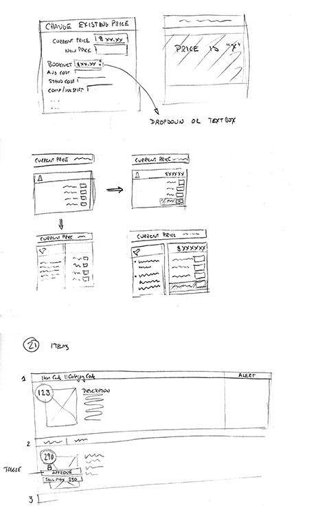
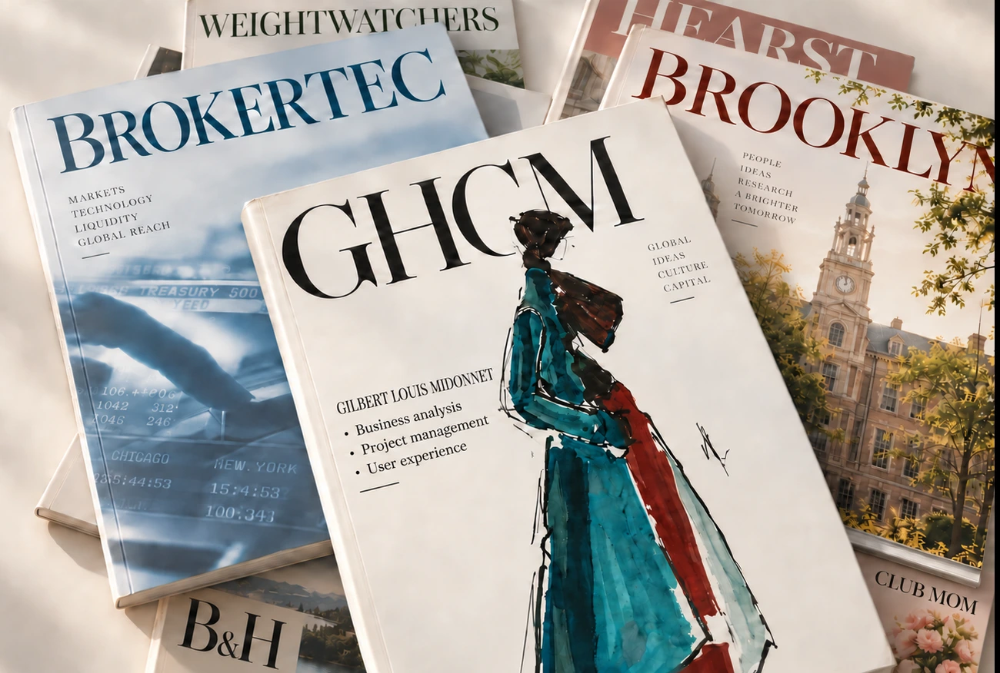
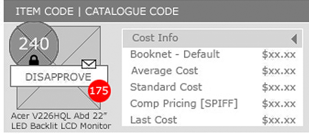
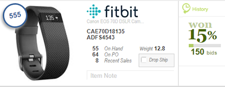

01 Explore

Sketches
Conversations and use cases generated many possible arrangements.
User experience / Customer experience
I focus on user experience and customer experience, turning business users’ ideas and needs into practical solutions—from understanding the problem and shaping workflows to helping teams bring the result into use.
I’ve worked in business analysis, project management, UI design, and full-stack development. I no longer take on UI design or full-stack development roles, but that experience informs how I work with business, design, and technical teams.

B&H / Bids
A pricing tool shaped by conversations with business users. Staff needed to scan at least four items per page, so cost, selling price, inventory, and pricing choices had to fit into compact columns.

Conversations and use cases generated many possible arrangements.

Keep the essentials visible; reveal secondary information when needed.

The colored Photoshop mockup set the detail; HTML testing changed the History font.
You sure you want more? There’s a lot more.
Yes, show me the full portfolio